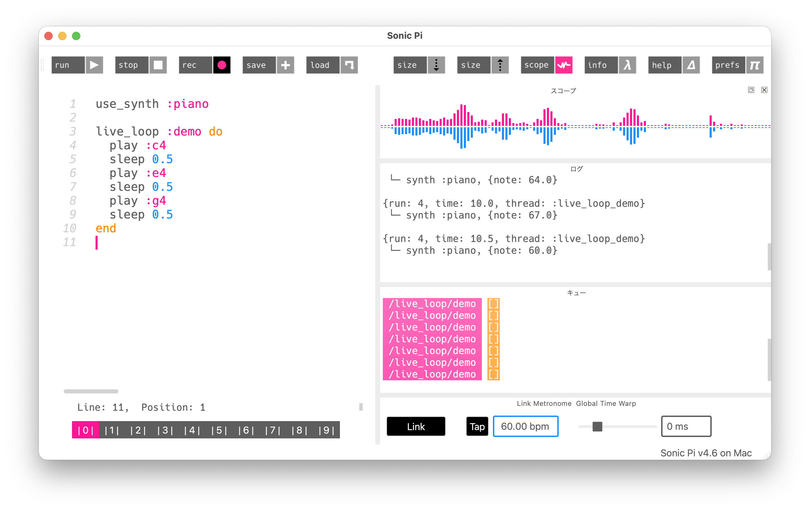

Lesson 3: Sonic Pi入門¶
このレッスンで学ぶこと¶
- Sonic Piの基本操作（起動、コード入力、実行）を習得する
playとsleepで音を順番に鳴らす- Lesson 1〜2 で学んだ波形や音名を Sonic Pi のシンセで確認する
- 繰り返し（
times do、live_loop）でメロディを構成する play_pattern_timedで配列を使ったメロディ記述を学ぶ
ここからは Sonic Pi を使います。Lesson 1〜2 で Python を通じて学んだ「音の仕組み」を、今度は音楽として鳴らしていきましょう。
環境セットアップ¶
Sonic Piのインストール¶
Sonic Pi は公式サイト（https://sonic-pi.net/）からダウンロードできます。Windows、macOS、Linux に対応しています。インストール手順の詳細は付録を参照してください。
画面の構成¶
Sonic Pi を起動すると、次のような画面が表示されます（図3.1）。

- コードエディタ（左側）: ここにコードを書きます
- Run / Stop ボタン（上部）: コードの実行と停止を行います
- ログ（右中央）: 実行中に鳴らした音のシンセ名や音名が表示されます
- スコープ（右上）: 音の波形がリアルタイムに表示されます
- キュー（右下）: 実行中のループの状態が表示されます
コードを書いて Run を押すとすぐに音が鳴ります。この即時性が Sonic Pi の魅力です。
3.1 最初の音を鳴らす¶
エディタに次のコードを入力して、Run を押してみてください。
「ポーン」という音が1つ鳴ります。play は音を鳴らすコマンドで、60 はMIDI番号です。Lesson 1 で「A4（ラ）が69番、C4（ド）が60番」と確認したことを思い出してください。つまり play 60 は「ドの音を鳴らす」という意味です。
音名で指定する¶
MIDI番号の代わりに、音名をシンボル（: 付きの名前）で指定することもできます。
これも同じ C4（ド）の音が鳴ります。:c4 は Sonic Pi で「C4の音」を表すシンボルです。番号より直感的なので、本書では基本的にこちらの書き方を使います。
いくつかの音を試してみましょう。
3つの音が同時に鳴ります。Run を押した瞬間に play が3つ続けて実行されるため、ほぼ同時に発音されるのです。音を順番に鳴らすには、次に紹介する sleep が必要です。
3.2 sleep — 音と音の間に間を置く¶
今度は「ド」「ミ」「ソ」が1つずつ順番に鳴ります。sleep 1 は「1拍待つ」という意味です。
sleep の値を変えると、音の間隔が変わります。
sleep 0.5 にすると倍の速さで鳴ります。逆に sleep 2 にすればゆっくりになります。
ドレミファソラシドを鳴らす¶
Lesson 1 で Python を使って周波数からドレミを生成しました。Sonic Pi なら音名を並べるだけです。
play :c4
sleep 0.5
play :d4
sleep 0.5
play :e4
sleep 0.5
play :f4
sleep 0.5
play :g4
sleep 0.5
play :a4
sleep 0.5
play :b4
sleep 0.5
play :c5
C4 から C5 まで、1オクターブのドレミが聞こえます。
3.3 use_synth — 音色を変える¶
Lesson 2 では、サイン波・矩形波・ノコギリ波・三角波を Python で生成し、波形の違いが音色の違いになることを学びました。Sonic Pi にはさまざまなシンセ（音源）が用意されており、use_synth で切り替えられます。
use_synth :beep
play :c4
sleep 1
use_synth :saw
play :c4
sleep 1
use_synth :square
play :c4
sleep 1
use_synth :tri
play :c4
同じ C4 でも、シンセによって音色がまったく違います。
| シンセ名 | 波形 | 音の特徴 |
|---|---|---|
:beep |
サイン波 | 純粋で素朴な「ピー」という音（デフォルト） |
:saw |
ノコギリ波 | 明るく鋭い音 |
:square |
矩形波 | 中空で硬い音。レトロゲーム風 |
:tri |
三角波 | サイン波に近いが少し角がある柔らかい音 |
Lesson 2 で sawtooth_wave() や square_wave() を使って聞き比べた波形が、Sonic Pi ではシンセ名を1つ変えるだけで使えます。Python で学んだ「波形 → 音色」の対応を、ここで体感してください。
その他のシンセ¶
Sonic Pi には楽器を模したシンセも多数あります。いくつか試してみましょう。
| シンセ名 | 音の特徴 |
|---|---|
:piano |
ピアノのような柔らかい音 |
:pluck |
弦をはじくような軽い音 |
:prophet |
温かみのあるアナログシンセ風 |
:blade |
透明感のある幻想的な音 |
:pretty_bell |
ベルのような澄んだ音 |
シンセの全リストは Sonic Pi のヘルプパネル（Synths タブ）で確認できます。気になるシンセを見つけたら、どんどん試してみてください。
3.4 繰り返し¶
同じフレーズを何度も繰り返すのは音楽の基本です。Sonic Pi では繰り返しを簡潔に書けます。
回数を指定する繰り返し: times do¶
3.times do ... end で、中のコードが3回繰り返されます。ドとミが交互に3回鳴ります。
繰り返しの中に繰り返しを入れることもできます。
内側のループ（ドを3回素早く）が終わったらソが鳴り、それが2回繰り返されます。
無限に繰り返す: live_loop¶
音楽は繰り返しの芸術です。ずっと繰り返し続けるには live_loop を使います。
live_loop :melody do ... end で、:melody という名前のループが無限に繰り返されます。Stop ボタンを押すまで鳴り続けます。
:melody の部分はループの名前で、自由につけられます。この名前は複数のループを管理するときに重要になります（Lesson 12 で詳しく扱います）。
注意: live_loop の中には必ず sleep を入れてください。sleep がないとループが一瞬で回り続け、Sonic Pi がフリーズします。
3.5 テンポを指定する: use_bpm¶
sleep 1 は「1拍待つ」と説明しましたが、1拍の長さはテンポ（BPM: Beats Per Minute）で決まります。デフォルトは 60 BPM（1拍 = 1秒）です。
use_bpm 120
live_loop :fast_melody do
play :c4
sleep 0.5
play :e4
sleep 0.5
play :g4
sleep 0.5
play :e4
sleep 0.5
end
use_bpm 120 でテンポを120 BPM（1拍 = 0.5秒）に設定しています。sleep の値はそのままで、全体のテンポだけが変わります。
数値を変えて試してみてください。use_bpm 60 ならゆったり、use_bpm 180 なら駆け足のテンポになります。
3.6 play_pattern_timed — 配列でメロディを書く¶
ドレミファソラシドを1音ずつ play と sleep で書くのは冗長です。play_pattern_timed を使うと、音の列と間隔をまとめて指定できます。
基本の使い方¶
1つ目の配列が音の並び、2つ目の配列が各音のあとの待ち時間（拍数）です。
間隔がすべて同じなら、2つ目の配列は1つの値だけでも構いません。
メロディを打ち込んでみる¶
「かえるの歌」の最初のフレーズ（ドレミファミレド）を打ち込んでみましょう。
たった2行でメロディが鳴ります。音名の配列を書き換えるだけで別の曲になるので、好きなメロディを試してみてください。
live_loop と組み合わせる¶
use_synth :piano
live_loop :kaeru do
play_pattern_timed [:c4, :d4, :e4, :f4, :e4, :d4, :c4], [0.5]
end
かえるの歌がずっと繰り返されます。
3.7 メロディに変化を加える¶
ランダムに音を選ぶ: choose¶
配列から1つの音をランダムに選んで鳴らすことができます。
.choose は配列の中からランダムに1つの要素を選ぶメソッドです。実行するたびに違うメロディが生まれます。
ただし、もう一度 Run を押すと同じメロディが再生されます。これは Sonic Pi がランダムシードを固定しているためです。毎回違う結果にしたい場合は、次のようにシードを変えます。
use_random_seed Time.now.to_i
live_loop :random_melody do
play [:c4, :e4, :g4].choose
sleep [0.25, 0.5, 1].choose
end
sleep にも .choose を使うと、リズムもランダムになります。
時々移調する: use_transpose¶
live_loop :melody do
if one_in(4)
use_transpose 2
else
use_transpose 0
end
play_pattern_timed [:c4, :e4, :g4, :e4], [0.25]
end
one_in(4) は「4回に1回の確率で true を返す」関数です。use_transpose 2 は以降の音を半音2つ分（全音1つ分）上げます。ループのたびに確率で移調が起きるので、同じフレーズに微妙な変化が生まれます。
3.8 RubyとPythonの対応¶
Sonic Pi で使われるプログラミング言語は Ruby です。Python を習得済みであれば、基本的な構文はすぐに馴染めます。主な違いを確認しておきましょう。
| 概念 | Python | Sonic Pi (Ruby) |
|---|---|---|
| 繰り返し（回数指定） | for i in range(3): |
3.times do ... end |
| 無限ループ | while True: |
live_loop :name do ... end |
| 配列（リスト） | [1, 2, 3] |
[1, 2, 3] |
| 条件分岐 | if x == 1: |
if x == 1 ... end |
| ブロックの区切り | インデント | do ... end |
| コメント | # コメント |
# コメント |
| シンボル | なし | :c4, :piano など |
最大の違いはブロックの区切り方です。Python はインデント（字下げ）でブロックを表しますが、Ruby は do ... end で囲みます。Sonic Pi のコードでインデントしているのは読みやすさのためで、動作には影響しません（ただし、読みやすさのために揃えることを強くお勧めします）。
シンボルは Ruby 特有の概念です。:c4 や :piano のように : で始まる名前で、音名やシンセ名の指定に使われます。Python の文字列に似ていますが、変更不可で軽量な「ラベル」と考えてください。
3.9 関数を定義する: define¶
繰り返し使うフレーズは関数にまとめると便利です。
define :kaeru do
play_pattern_timed [:c4, :d4, :e4, :f4, :e4, :d4, :c4], [0.5]
end
kaeru
sleep 1
kaeru
define :kaeru do ... end で :kaeru という関数を定義し、kaeru と書くだけで呼び出せます。
注意: Sonic Pi の define は Sonic Pi 独自のコマンドです。Ruby の標準的な関数定義は def ... end ですが、Sonic Pi では define :名前 do ... end を使います。
引数を使う¶
|note| が引数です。Python の def play_note(note): に対応します。
まとめ¶
このレッスンで学んだことを整理します。
| コマンド | 役割 | 例 |
|---|---|---|
play |
音を鳴らす | play :c4, play 60 |
sleep |
拍数だけ待つ | sleep 0.5 |
use_synth |
シンセ（音色）を切り替える | use_synth :piano |
use_bpm |
テンポを設定する | use_bpm 120 |
N.times do ... end |
N回繰り返す | 3.times do ... end |
live_loop :name do ... end |
無限ループ | live_loop :melody do ... end |
play_pattern_timed |
配列でメロディを鳴らす | play_pattern_timed [:c4, :e4], [0.5] |
.choose |
配列からランダムに選ぶ | [:c4, :e4, :g4].choose |
use_transpose |
移調する | use_transpose 2 |
one_in(N) |
N回に1回 true | one_in(4) |
define :name do ... end |
関数を定義する | define :kaeru do ... end |
Lesson 1〜2 との対応¶
| Pythonで学んだこと | Sonic Piでの対応 |
|---|---|
| 周波数 440Hz → ラの音 | play :a4 または play 69 |
| サイン波・ノコギリ波・矩形波・三角波 | :beep, :saw, :square, :tri |
| MIDI番号（C4 = 60） | play 60 と play :c4 は同じ |
| NumPy配列で音を表現 | 配列 [:c4, :e4, :g4] でメロディを表現 |
次回予告¶
Lesson 4 では Python に戻り、倍音と音色を扱います。なぜノコギリ波はサイン波と音色が違うのか、その原理を周波数分析で解き明かします。Lesson 5 では、その知識を使って Sonic Pi のシンセパラメータをより深くコントロールします。